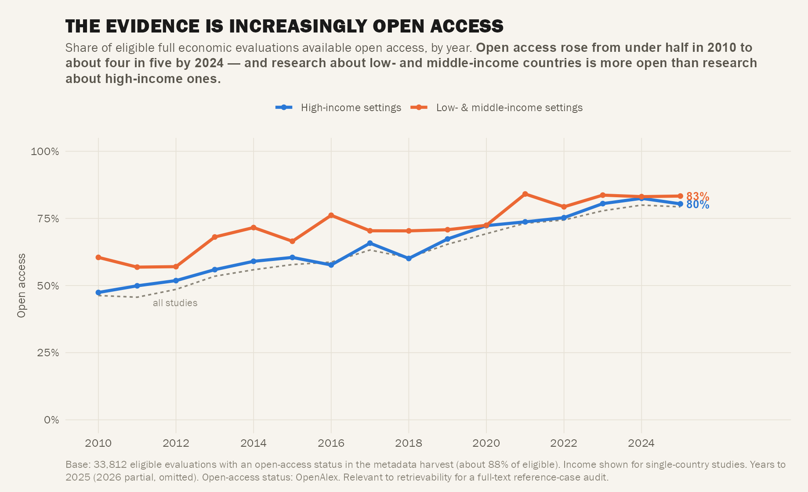

Act VI — Bibliometrics
Act VI: Bibliometrics
How the evidence is packaged and reached. All harvest-dependent (Wave 0 emit). Reflexively ties back to the full-text-access limitation.

C25 — Open Access Over Time & by Income
is_oa × year × income, lines. 93% base (after DOI supplement harvest). Is the evidence reachable — and is reachability equal?
OA rose 46% → 80% (2010–2024). LMIC research more open than HIC at every year. Mirrors the full-text-retrieval limitation we face.
C26 — Language of the Evidence
Corpus is 99.8% English, flat across regions. A one-line limitation, not a figure. The English-database search systematically misses non-English HEE literature.
Dropped — null finding. Non-English HEE is absent from the map; absence concentrated in under-served regions.
C27 — Where It Is Published (Journal Concentration)
Journal Lorenz curve / top-20 bar. How concentrated is the literature across journals? (Harvest 93% base, journal 87.5% coverage).
Thin unless concentration is striking. Buildable now on harvest data.
C28 — Who Funds It (Funder Landscape)
Top funders bar from
funders field (~28% coverage, as-harvested). NIHR/HTA/NIH/MRC variants lightly merged — a floor, not a census.
Thin: caption the base honestly. Funder pack F5 is the richer version of this.
Act VI Summary
| Figure | Status | Strength | Key Message |
|---|---|---|---|
| C25 | ✅ Built | ★★ Solid | OA 46→80%; LMIC more open than HIC |
| C26 | ❌ Dropped | — | 99.8% English — limitation, not figure |
| C27 | 🛠️ Buildable | ★ Thin | Journal Lorenz / top-20 (harvest 87.5%) |
| C28 | 🛠️ Buildable | ★ Thin | Funders ~28% coverage (floor, not census) |
Wave 0 harvest note: The supplementary DOI harvest (~15,959 eligible-but-unharvested DOIs) is running to lift Act VI / C14 base from 51% → ~93%. C25, C27, C28 will improve when complete.
Previous: ← Act V: Gaps vs Burden • Next: Funder Decision Pack →